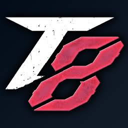
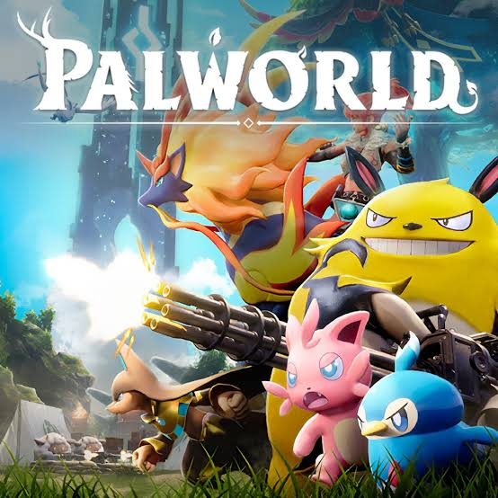
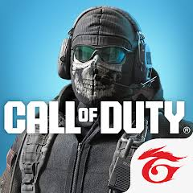
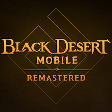
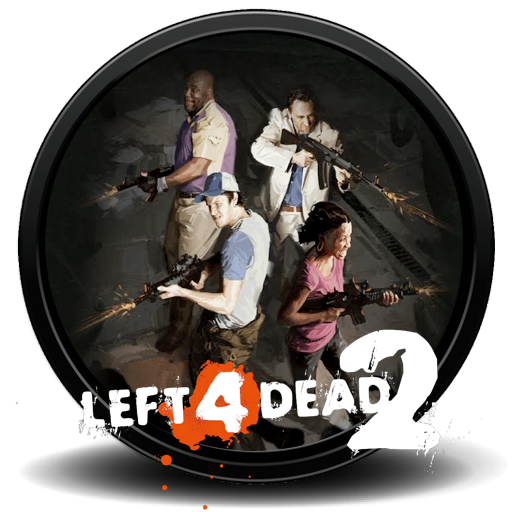
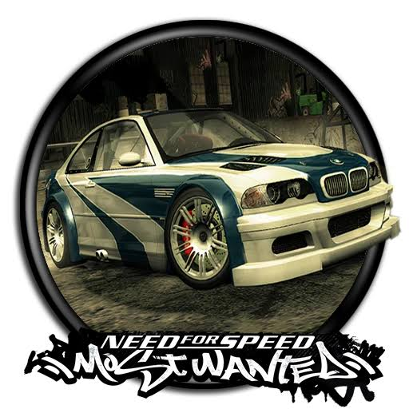

Tekken 8
I played this game first because I was intrigued by the character styles and I got more interested after knowing the lore. I also like fighting games, that’s why I played it.
BSCS 2A
E-GAMES PLAYER
“Sometimes in our busy lives, we should take a break, relax, and play some games.”
I’m Bernelle Queency R. Tibon, the BSCS Class President, House of Cahel Houselady, and Creatives Design Team’s External Vice President. I present my web portfolio, which shares a little about my journey as a student and the hobbies I enjoy during my free time.
I am a student at ACLC Ormoc City who has been balancing leadership, schoolwork, games, and personal life ever since I became a college student. It wasn’t easy at first because I didn’t know anyone and was new to the environment here in Ormoc City.
However, along the way, I gradually adapted to my new surroundings and learned how to balance my responsibilities as both a leader and a student during the two years I have spent here.
This portfolio gives a glimpse into how I spend my free time by showcasing the games I play and enjoy whenever I have time to relax from my busy student life.

I played this game first because I was intrigued by the character styles and I got more interested after knowing the lore. I also like fighting games, that’s why I played it.

This is the game I am currently so invested in. I like the game mechanics and ever since it was released, I played it with my best friend and together, we fight and explore. It became my favorite game.

I have played this game before with my friends ever since I was in junior high. This was the game that made me interested about age doesn’t matter when it comes to playing your fav game.

I have played this game because I saw an ad about it before and after I tried it out, I became invested, not just because of graphics quality, but also because it can auto-grind. So I can play while working.

This was the first game I played after I got a laptop. My friends invited me to play this game even if I was a total beginner but they still played with me and taught me how to play it.

This is the game I am most nostalgic to. I love racing games and this game will always be my #1 racing game that I will ever play.